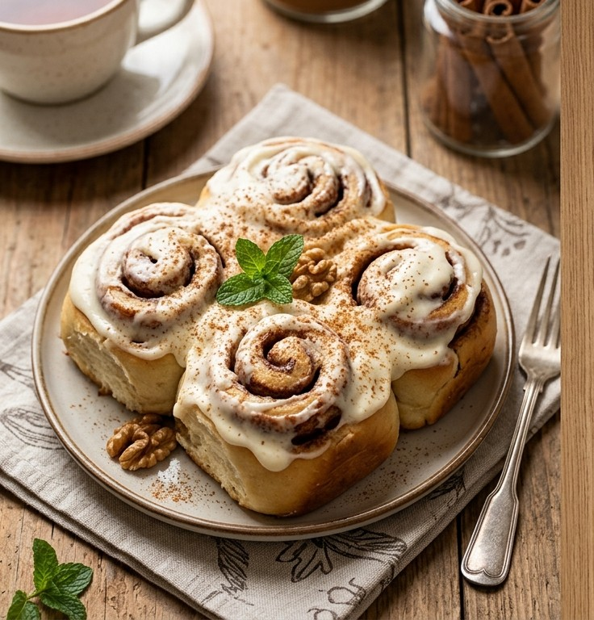

סינבון קינמון נמס בפה
הוספת מתכון
הוראות הכנה למאפה סינבון רך ומשגע בעל ניחוח מדהים.
מתכון קל ופשוט שכל אחד יכול להכין בבית וליהנות מתוצאה מאוד טעימה!


מעט על המתכון
מאפה השמרים הקינמוני הזה מגיע מארה"ב והפך להצלחה עולמית בזכות המרקם הרך והציפוי העשיר.
אוהבים להכין אותו בעיקר בסתיו שאז המרקם והטעם מתאימים לעונה
כותרת h3 לדוגמה
כותרת h4 לדוגמה
מצרכים
- 500 גרם קמח לבן
- 1 שקית שמרים יבשים
- 100 גרם חמאה מומסת
-
תבלינים ושדרוגים:
- 1 כפית מלח
- 2 כפיות קינמון טחון
- 1/2 כפית פפריקה מתוקה (לצבע)
- 1 כוס חלב חמים
- 1/2 כוס סוכר
אופן ההכנה
- מערבבים את הקמח, השמרים והסוכר בקערה גדולה.
- מוסיפים את החלב החמים והחמאה ולשים במשך 10 דקות עד לקבלת בצק רך.
- מכסים ומתפיחים כ-שעה עד שהבצק מכפיל את נפחו.
- מרדדים את הבצק למלבן, מורחים חמאה, מפזרים סוכר וקינמון ומגלגלים לרולדה.
- חותכים לפרוסות, מניחים בתבנית, אופים ב-180 מעלות כ-25 דקות ומגישים חם!
נתוני המתכון
| שלב | זמן | טמפרטורה |
|---|---|---|
| הכנת הבצק והתפחה | 70 דקות | טמפרטורת החדר |
| עיצוב ומילוי | 15 דקות | - |
| אפייה בתנור | 25 דקות | 180 מעלות |
| ציפוי והגשה | 5 דקות | חם |
| מציצת אצבעות | מיד! | |
| סה"כ זמן הכנה משוער: | כ-115 דקות | |
טיפים
- מומלץ להשתמש בחוט דנטלי ללא טעם כדי לחתוך את הרולדה בצורה נקייה ומדויקת.
- ניתן להוסיף אגוזי מלך קצוצים מעל מילוי הקינמון לשדרוג הקראנצ'יות.
- לצפייה במתכון לחצו כאן למעבר לאתר המתכונים הרשמי.